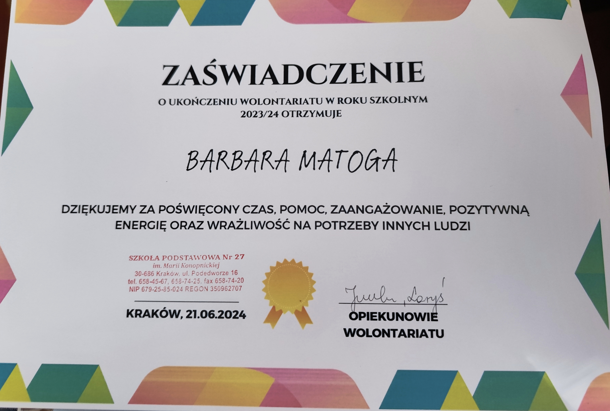
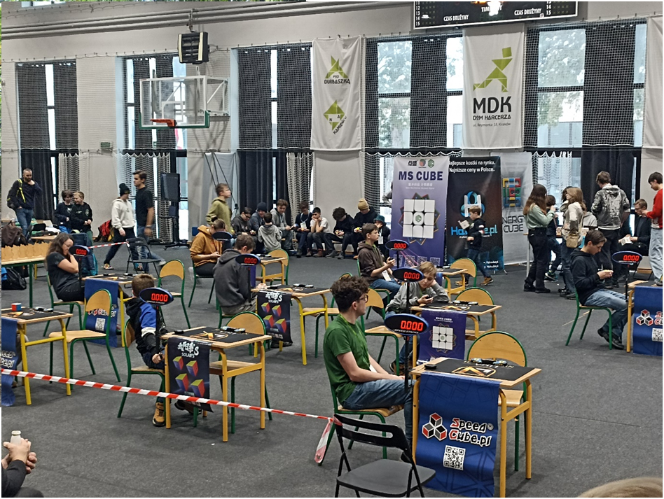
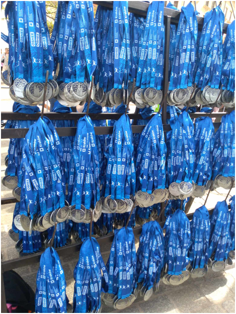
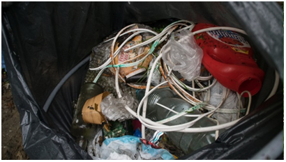

WOLONTARIAT
- Cele aktywności wykonanych w ramach wolontariatu
- Głównym powodem dla którego podjełam się wolontariatu są różnorodne
aktywności z nim związane, przy których mogłam jednocześnie pomóc
innym i nabrać nowych umiejętności czy doświadczenia, które w większości
były naprawdę przyjemne i ciekawe.
- Chciałam również zrobić coś dobrego ogólnie, na co pozwoliło mi kilka wydarzeń,
które wymienię poniżej łącznie z krótkimi opisami co można było podczas nich
wykonać.
- W/w wszelkie wydarzenia/aktywności w jakich miałam przyjemność brać udział
- Półmaraton & Maraton Cracovia -> Rozdawaliśmy wszystkim biegaczom wodę, medale i koce termiczne
przy
mecie.
- Dragon cubing -> 2-dniowy event w budynku koło Parku Jordana, głównymi zadaniami było
przynoszenie
uczestnikom kostek do układania, mierzenie ich czasu i uzupełnianie kartek, a na koniec
doprowadzenie sali do porządku.
- "Sprzątanie świata na rzece Drwinka" -> Opiekunowie naszej grupy wolontariatu wzięli nas kilka
razy nad rzekę
Drwinkę gdzie zbieraliśmy jak najwięcej odpadów mogliśmy znaleźć by oczyścić okolicę.
- Czytanie bajek i przygotowanie warsztatów świątecznych w języku angielskim w przedszkolu ->
Kilkukrotnie
wybraliśmy się do przedszkola zlokalizowanego na tym samym osiedlu co nasza szkoła, oferując
tamtejszym
dzieciom kilkugodzinne warsztaty w języku angielskim, głównie słownictwo, i czytaliśmy im bajki
podczas pory obiadowej.
- Pomoc w przygotowaniach do różnych wydarzeń w szkole -> większość czasu polegało to na
przynoszeniu krzeseł/ławek
lub na przygotowywaniu sprzętu gdyż pełniłam rolę informatyka w grupie uczniów. Rzadziej ale
również pomagałam
w robieniu dekoracji sali czy korytarza oraz koordynowałam wszelkie próby i występy.
- Zaświadczenie o pracy w wolontariacie + kilka zdjęć z wyjść



